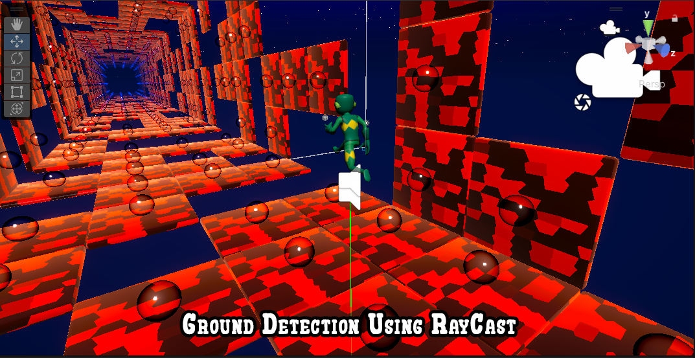
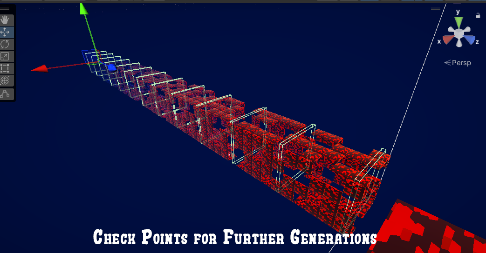
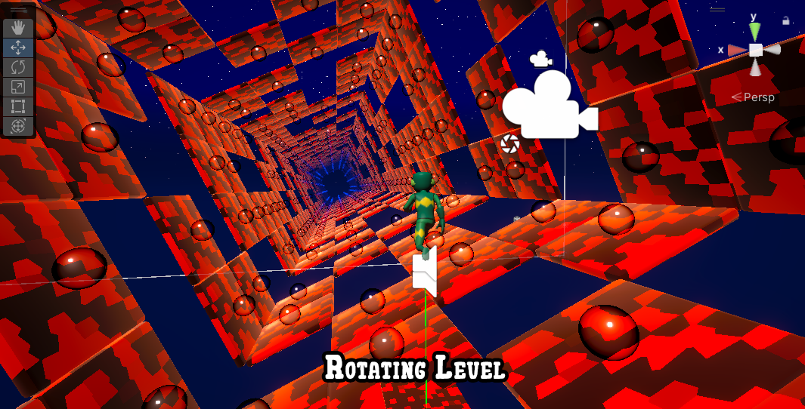
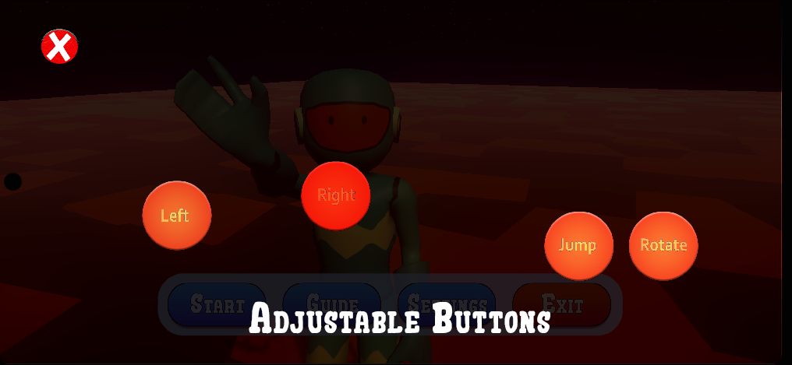

The Mission
In Alien Runner: Planet Dash 3D, the player controls an alien runner exploring three unique planetary environments: Asteroid, Jupiter, and Neptune. The primary objective is to cover the maximum distance while collecting energy bubbles scattered throughout the level. Collecting 150 bubbles unlocks the next planet, encouraging progression and exploration across increasingly challenging environments.
Each level introduces distinct gameplay mechanics:
- Asteroid: Features wide void gaps as the main obstacle, requiring precise timing and jumps.
- Jupiter: Introduces temporary tiles that collapse immediately after landing, forcing quick reactions and continuous movement.
- Neptune: Combines void gaps and falling tiles with deadly spikes that instantly eliminate the player on contact, creating the most challenging experience.
To overcome long gaps that cannot be crossed with standard jumps, the player can use a level-flipping mechanic, allowing the world to rotate and create new paths dynamically. The game focuses on reflex-based gameplay, risk management, and mastering mechanics to achieve higher distances and unlock new levels.
Technical Breakdown
This project is developed using Unity Engine, focusing on scalable system design, real-time simulation, and performance-aware architecture. Each feature is implemented with an emphasis on both gameplay realism and computational efficiency. Key technical implementations include:
Procedural Generation System
- Developed using Perlin Noise to dynamically create tiles, void gaps, temporary platforms, and spike obstacles in real time.
- The noise function takes the current tile position as input, which is further transformed using controlled division, multiplication constants, and pre-seeded random offsets per iteration.
- This ensures a balance between unpredictability and structured gameplay progression.
Adaptive Tile Logic
- Implemented logic driven by noise thresholds.
- Low noise values generate void gaps requiring precise jumps; mid-range values spawn temporary tiles that collapse after player contact; high values produce hazard tiles (spikes) that trigger instant player death on collision.
- This layered system allows smooth difficulty scaling across levels.
Level-Flipping Mechanic
- Designed a system using Quaternion-based rotation (
Quaternion.RotateTowards), enabling smooth and controlled world transitions. - This allows players to traverse otherwise unreachable long gaps by dynamically altering the playable surface orientation.
Responsive Player Movement
- Built a movement and jump system using
Physics.Raycastfor ground detection. - Based on raycast hit results, the player’s downward velocity is dynamically manipulated to simulate a spring-damped jump effect, resulting in more natural and responsive landing and takeoff behavior.
Endless Progression Loop
- Created a continuous loop using a checkpoint-based system.
- Checkpoints utilize
OnTriggerEnterevents to invoke tile generation functions, ensuring continuous level extension as the player advances. - Each checkpoint recursively spawns the next segment along with future checkpoints.
Coroutine Synchronization
- Integrated coroutines (
IEnumerator) to synchronize tile generation with gameplay states, particularly during level rotation. - This prevents tile misalignment and ensures spatial consistency when new segments are spawned mid-transition.
Memory & Performance Optimization
- Applied optimizations through dynamic tile lifecycle management.
- Tiles that fall behind the player are destroyed or recycled, significantly reducing memory overhead and maintaining stable performance on mobile hardware.
Dynamic Visual Environments
- Developed visually dynamic environments using Shader Graph, enabling real-time procedural control over tile textures and skybox gradients.
- This allows each planetary level to have distinct color palettes and atmospheric effects, enhancing immersion and visual feedback.